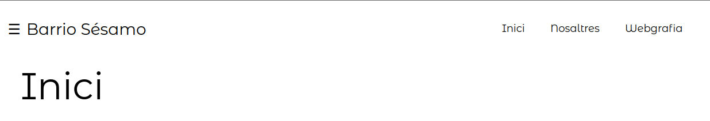
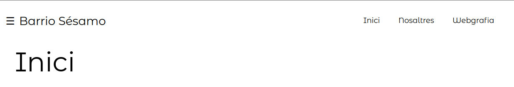

La nostra idea principal era crear una pàgina web
on tota la informació anava a estar en un mateix
lloc, des del qual podies veure-ho tot fent escroll
Després vam crear un menú de navegació per setmanes
on cada una estava enllaçada entre si i presentava
lo que se habia hecho cada semana

Més tard vam col·locar aquest menú principal
per accedir a tots els diferents projectes que
farem al llarg del curs

Junt amb un menú lateral per accedir a ells I amb aquest menu extern
 


Després ens hem decidit donar-li un fons blanc a la pàgina amb
una imatge i estil simple
Este fue el primer efecto que
agregamos con javascript
Luego mas tarde pusimos que les
imatges i al contingut de la pàgina
se fueran apareciendo y desapar-
eciendo segun hacias scroll
Després vam col·locar un efecte de carrusel
on vam descriure les comandes que vam utilitzar
per instal·lar l'Apache
Després vam col·locar aquestes targetes
para presentarnos